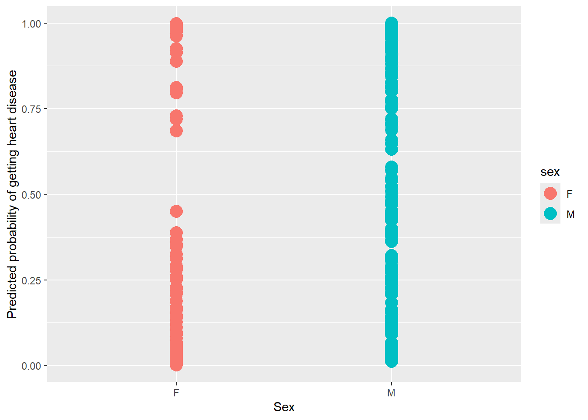

url <- "https://raw.githubusercontent.com/StatQuest/logistic_regression_demo/master/processed.cleveland.data"
data <- read.csv(url, header=FALSE)Logistic Regression
Pembelajaran regresi logistic
Offline di Departemen Matematika
Struktur Pembelajaran
Halo, selamat sejahtera semua. Kali ini kita akan masuk pembelajaran regresi logistik. Pembelajaran kali ini akan memiliki bertujuan untuk mengetahui secara sederhana untuk kalian dapat menentukan kapan kalian menggunakan regresi linear sederhana & regresi logistik sederhana.
Akan tetapi, bagi kalian yang ingin memahami secara penuh, kita tetap menyediakan penjelasan pada link halaman lainnya.
Mempersiapkan code
Attach Data
Kita akan mendapatkan koleksi data real dari repositori pembelajaran mesin UCI khususnya kita akan mengambil data penyakit jantung
Kita mulai dengan membuat variabel bernama URL dan menyetelnya ke lokasi data yang kita inginkan
beginilah cara R membaca collection data dari URL.
Fungsi head menunjukkan kepada kita 6 baris data pertama, sayangnya tidak ada kolom yang diberi label
head(data) V1 V2 V3 V4 V5 V6 V7 V8 V9 V10 V11 V12 V13 V14
1 63 1 1 145 233 1 2 150 0 2.3 3 0.0 6.0 0
2 67 1 4 160 286 0 2 108 1 1.5 2 3.0 3.0 2
3 67 1 4 120 229 0 2 129 1 2.6 2 2.0 7.0 1
4 37 1 3 130 250 0 0 187 0 3.5 3 0.0 3.0 0
5 41 0 2 130 204 0 2 172 0 1.4 1 0.0 3.0 0
6 56 1 2 120 236 0 0 178 0 0.8 1 0.0 3.0 0Oh no!
Data nya tidak rapih. Kalau begitu, sekarang …
Pre-Processing Data
Kita menamai kolom tersebut dengan nama yang terdaftar di situs web UCI.
Mari kita format ulang data nya agar:
- Mudah digunakan
- Ditafsirkan ( interpreted ) dengan benar oleh
glm().
colnames(data) <- c(
"age",
"sex",# 0 = female, 1 = male
"cp", # chest pain
# 1 = typical angina,
# 2 = atypical angina,
# 3 = non-anginal pain,
# 4 = asymptomatic
"trestbps", # resting blood pressure (in mm Hg)
"chol", # serum cholestoral in mg/dl
"fbs", # fasting blood sugar if less than 120 mg/dl, 1 = TRUE, 0 = FALSE
"restecg", # resting electrocardiographic results
# 1 = normal
# 2 = having ST-T wave abnormality
# 3 = showing probable or definite left ventricular hypertrophy
"thalach", # maximum heart rate achieved
"exang", # exercise induced angina, 1 = yes, 0 = no
"oldpeak", # ST depression induced by exercise relative to rest
"slope", # the slope of the peak exercise ST segment
# 1 = upsloping
# 2 = flat
# 3 = downsloping
"ca", # number of major vessels (0-3) colored by fluoroscopy
"thal", # this is short of thalium heart scan
# 3 = normal (no cold spots)
# 6 = fixed defect (cold spots during rest and exercise)
# 7 = reversible defect (when cold spots only appear during exercise)
"hd" # (the predicted attribute) - diagnosis of heart disease
# 0 if less than or equal to 50% diameter narrowing
# 1 if greater than 50% diameter narrowing
)Hoorayy 🥰 sekarang ketika kita melihat 6 baris pertama dengan fungsi head segalanya terlihat jauh lebih baik🎉
head(data) age sex cp trestbps chol fbs restecg thalach exang oldpeak slope ca thal hd
1 63 1 1 145 233 1 2 150 0 2.3 3 0.0 6.0 0
2 67 1 4 160 286 0 2 108 1 1.5 2 3.0 3.0 2
3 67 1 4 120 229 0 2 129 1 2.6 2 2.0 7.0 1
4 37 1 3 130 250 0 0 187 0 3.5 3 0.0 3.0 0
5 41 0 2 130 204 0 2 172 0 1.4 1 0.0 3.0 0
6 56 1 2 120 236 0 0 178 0 0.8 1 0.0 3.0 0Namun, fungsi str yang menjelaskan struktur data memberi tahu kita bahwa beberapa kolom sedang kacau saat ini.
str(data) # this shows that we need to tell R which columns contain factors'data.frame': 303 obs. of 14 variables:
$ age : num 63 67 67 37 41 56 62 57 63 53 ...
$ sex : num 1 1 1 1 0 1 0 0 1 1 ...
$ cp : num 1 4 4 3 2 2 4 4 4 4 ...
$ trestbps: num 145 160 120 130 130 120 140 120 130 140 ...
$ chol : num 233 286 229 250 204 236 268 354 254 203 ...
$ fbs : num 1 0 0 0 0 0 0 0 0 1 ...
$ restecg : num 2 2 2 0 2 0 2 0 2 2 ...
$ thalach : num 150 108 129 187 172 178 160 163 147 155 ...
$ exang : num 0 1 1 0 0 0 0 1 0 1 ...
$ oldpeak : num 2.3 1.5 2.6 3.5 1.4 0.8 3.6 0.6 1.4 3.1 ...
$ slope : num 3 2 2 3 1 1 3 1 2 3 ...
$ ca : chr "0.0" "3.0" "2.0" "0.0" ...
$ thal : chr "6.0" "3.0" "7.0" "3.0" ...
$ hd : int 0 2 1 0 0 0 3 0 2 1 ...# it also shows us that there are some missing values. There are "?"s
# in the dataset. These are in the "ca" and "thal" columns...kekacauannya adalah sebagai berikut:
sexadalah angka (number) tetapi seharusnya menjadi factor di mana nol mewakili perempuan dan satu mewakili laki lakiCPalias nyeri dada juga seharusnya menjadi factor di mana level 1 hingga 3 mewakili berbagai jenis nyeri dan 4 tidak mewakili nyeri dadaCAdanThaldisebut dengan benar sebagai faktor tetapi salah satu levelnya adalah tanda tanya saat kita membutuhkannya
Jadi kita harus melakukan pembersihan
Cleaning Data
Hal pertama yang kita lakukan adalah
- mengubah tanda tanya menjadi
NA
## First, convert "?"s to NAs...
data[data == "?"] <- NA- lalu hanya untuk mempermudah melihat data kita mengubah angka nol dalam
sexmenjadi F untuk perempuan dan yang menjadi M untuk laki laki
## Now add factors for variables that are factors and clean up the factors
## that had missing data...
data[data$sex == 0,]$sex <- "F"
data[data$sex == 1,]$sex <- "M"
data$sex <- as.factor(data$sex)- terakhir kita mengubah kolom yang seharusnya menjadi factor karena memang seharusnya demikian lihat situs web UCI
data$cp <- as.factor(data$cp)
data$fbs <- as.factor(data$fbs)
data$restecg <- as.factor(data$restecg)
data$exang <- as.factor(data$exang)
data$slope <- as.factor(data$slope)Oh no! Coba perhatikan yang lain sekarang. Karena kolom CA awalnya memiliki tanda tanya di dalamnya alih-alih menganggap itu kolom string, kita mengoreksi asumsi itu dengan memberi tahu bahwa itu adalah kolom integer dan kemudian kita mengubahnya menjadi factor, lalu kita melakukan hal yang sama untuk Thal.
data$ca <- as.integer(data$ca) # since this column had "?"s in it
# R thinks that the levels for the factor are strings, but
# we know they are integers, so first convert the strings to integers...
data$ca <- as.factor(data$ca) # ...then convert the integers to factor levels
data$thal <- as.integer(data$thal) # "thal" also had "?"s in it.
data$thal <- as.factor(data$thal)- hal lain yang perlu kita lakukan pada data adalah menjadikan
HDalias penyakit jantung sebagai factor yang mudah dilihat.
## This next line replaces 0 and 1 with "Healthy" and "Unhealthy"
data$hd <- ifelse(test=data$hd == 0, yes="Healthy", no="Unhealthy")
data$hd <- as.factor(data$hd) # Now convert to a factorDi sini saya menggunakan trik fancy dengan fungsi if-else untuk mengubah angka nol menjadi sehat dan yang menjadi tidak sehat.
Kita bisa saja melakukan trik serupa untuk sex tapi saya ingin menunjukkan kepada Anda, kedua cara ini untuk mengubah angka menjadi string.
Setelah selesai memperbaiki data, kita periksa bahwa kita telah membuat perubahan yang sesuai kita harapkan dengan fungsi str
str(data) ## this shows that the correct columns are factors'data.frame': 303 obs. of 14 variables:
$ age : num 63 67 67 37 41 56 62 57 63 53 ...
$ sex : Factor w/ 2 levels "F","M": 2 2 2 2 1 2 1 1 2 2 ...
$ cp : Factor w/ 4 levels "1","2","3","4": 1 4 4 3 2 2 4 4 4 4 ...
$ trestbps: num 145 160 120 130 130 120 140 120 130 140 ...
$ chol : num 233 286 229 250 204 236 268 354 254 203 ...
$ fbs : Factor w/ 2 levels "0","1": 2 1 1 1 1 1 1 1 1 2 ...
$ restecg : Factor w/ 3 levels "0","1","2": 3 3 3 1 3 1 3 1 3 3 ...
$ thalach : num 150 108 129 187 172 178 160 163 147 155 ...
$ exang : Factor w/ 2 levels "0","1": 1 2 2 1 1 1 1 2 1 2 ...
$ oldpeak : num 2.3 1.5 2.6 3.5 1.4 0.8 3.6 0.6 1.4 3.1 ...
$ slope : Factor w/ 3 levels "1","2","3": 3 2 2 3 1 1 3 1 2 3 ...
$ ca : Factor w/ 4 levels "0","1","2","3": 1 4 3 1 1 1 3 1 2 1 ...
$ thal : Factor w/ 3 levels "3","6","7": 2 1 3 1 1 1 1 1 3 3 ...
$ hd : Factor w/ 2 levels "Healthy","Unhealthy": 1 2 2 1 1 1 2 1 2 2 ...hoooraaayy berhasil 🎉🎉🎉
Handling Missing Value
Sekarang kita melihat berapa banyak baris sampel data yang memiliki nilai na. nanti kita akan memutuskan apakah kita bisa membuang sampel ini atau apakah kita harus memasukkan nilai untuk NA.
## Now determine how many rows have "NA" (aka "Missing data"). If it's just
## a few, we can remove them from the dataset, otherwise we should consider
## imputing the values with a Random Forest or some other imputation method.
nrow(data[is.na(data$ca) | is.na(data$thal),])[1] 6data[is.na(data$ca) | is.na(data$thal),] age sex cp trestbps chol fbs restecg thalach exang oldpeak slope ca thal
88 53 F 3 128 216 0 2 115 0 0.0 1 0 <NA>
167 52 M 3 138 223 0 0 169 0 0.0 1 <NA> 3
193 43 M 4 132 247 1 2 143 1 0.1 2 <NA> 7
267 52 M 4 128 204 1 0 156 1 1.0 2 0 <NA>
288 58 M 2 125 220 0 0 144 0 0.4 2 <NA> 7
303 38 M 3 138 175 0 0 173 0 0.0 1 <NA> 3
hd
88 Healthy
167 Healthy
193 Unhealthy
267 Unhealthy
288 Healthy
303 Healthy## so 6 of the 303 rows of data have missing values. This isn't a large
## percentage (2%), so we can just remove them from the dataset
nrow(data)[1] 3036 baris sampel data memiliki NA di dalamnya.
kita dapat melihat sampel di dalamnya dengan memilih baris tersebut dari dataframe dan di sanalah mereka di sini adalah nilai NA lima dari enam sampel adalah laki-laki dan dua dari enam memiliki penyakit jantung.
data[is.na(data$ca) | is.na(data$thal),] age sex cp trestbps chol fbs restecg thalach exang oldpeak slope ca thal
88 53 F 3 128 216 0 2 115 0 0.0 1 0 <NA>
167 52 M 3 138 223 0 0 169 0 0.0 1 <NA> 3
193 43 M 4 132 247 1 2 143 1 0.1 2 <NA> 7
267 52 M 4 128 204 1 0 156 1 1.0 2 0 <NA>
288 58 M 2 125 220 0 0 144 0 0.4 2 <NA> 7
303 38 M 3 138 175 0 0 173 0 0.0 1 <NA> 3
hd
88 Healthy
167 Healthy
193 Unhealthy
267 Unhealthy
288 Healthy
303 Healthyjika kita mau, kita dapat mengaitkan nilai untuk NA menggunakan random forest atau metode lain. namun untuk contoh ini kita hanya akan menghapus sampel ini termasuk enam sampel dalam NA.
nrow(data)[1] 303data <- data[!(is.na(data$ca) | is.na(data$thal)),]
nrow(data)[1] 297ada tiga ratus tiga sampel kemudian kita menghapus enam sampel yang memiliki NA, dan setelah menghapus sampel tersebut ada dua ratus sembilan puluh tujuh sampel yang tersisa.
Sekarang kita perlu memastikan bahwa sampel yang sehat dan berpenyakit berasal dari setiap jenis kelamin perempuan dan laki-laki.
jika hanya sampel laki-laki yang memiliki penyakit jantung, kita mungkin harus menghapus semua perempuan dari model tersebut.
kita melakukan ini dengan fungsi xtabs kita meneruskan xtabs data dan menggunakan sintaks model untuk memilih kolom dalam data yang ingin kita buat tabelnya. Dalam hal ini kita menginginkan tabel dengan penyakit jantung dan sex.
xtabs(~ hd + sex, data=data) sex
hd F M
Healthy 71 89
Unhealthy 25 112## Most of the females are healthy and most of the males are unhealthy.
## Being female is likely to decrease the odds in being unhealthy.
## In other words, if a sample is female, the odds are against it that it
## will be unhealthy
## Being male is likely to increase the odds in being unhealthy...
## In other words, if a sample is male, the odds are for it being unhealthypasien sehat dan tidak sehat sama-sama diwakili oleh banyak sampel wanita dan pria singkatnya dilaporkan oleh sekelompok pasien.
## Most of the females are healthy and most of the males are unhealthy.
## Being female is likely to decrease the odds in being unhealthy.
## In other words, if a sample is female, the odds are against it that it
## will be unhealthy
## Being male is likely to increase the odds in being unhealthy...
## In other words, if a sample is male, the odds are for it being unhealthysekarang mari kita verifikasi bahwa keempat tingkat nyeri dada CP.
## Now we can do some quality control by making sure all of the factor
## levels are represented by people with and without heart disease (hd)
##
## NOTE: We also want to exclude variables that only have 1 or 2 samples in
## a category since +/- one or two samples can have a large effect on the
## odds/log(odds)
xtabs(~ hd + cp, data=data) cp
hd 1 2 3 4
Healthy 16 40 65 39
Unhealthy 7 9 18 103Kemudian kita melakukan hal yang sama untuk semua variabel boolean dan categoric yang kita gunakan untuk memprediksi penyakit jantung.
xtabs(~ hd + fbs, data=data) fbs
hd 0 1
Healthy 137 23
Unhealthy 117 20xtabs(~ hd + restecg, data=data) restecg
hd 0 1 2
Healthy 92 1 67
Unhealthy 55 3 79Inilah sesuatu yang dapat menyebabkan masalah pada hasil istirahat elektrokardiografi. Hanya 4 pasien yang mewakili level 1, hal ini berpotensi menghalangi pencarian jalur yang paling pas (fit). Namun untuk saat ini kita hanya akan membiarkannya dan melihat apa yang terjadi dan kemudian kita terus melihat variabel yang tersisa untuk memastikan bahwa semuanya diwakili oleh sejumlah pasien.
xtabs(~ hd + exang, data=data) exang
hd 0 1
Healthy 137 23
Unhealthy 63 74xtabs(~ hd + slope, data=data) slope
hd 1 2 3
Healthy 103 48 9
Unhealthy 36 89 12xtabs(~ hd + ca, data=data) ca
hd 0 1 2 3
Healthy 129 21 7 3
Unhealthy 45 44 31 17xtabs(~ hd + thal, data=data) thal
hd 3 6 7
Healthy 127 6 27
Unhealthy 37 12 88oke kita sudah melakukan semua hal yang membosankan sekarang mari kita lakukan regresi logistik mari kita mulai dengan model yang sangat sederhana.
kita akan mencoba memprediksi penyakit jantung hanya dengan menggunakan jenis kelamin setiap pasien. inilah code call kita ke fungsi GLM fungsi yang menjalankan Generalized Linear Models.
logistic <- glm(hd ~ sex, data=data, family="binomial")pertama kita menggunakan rumus sintaks untuk menentukan bahwa kita ingin menggunakan jenis kelamin untuk memprediksi penyakit jantung. Kita ingin menggunakan jenis kelamin untuk memprediksi penyakit jantung kemudian kita menentukan data yang kita gunakan untuk model tersebut. Terakhir kita menetapkan bahwa kita menginginkan keluarga binomial dari model linier umum, hal ini membuat fungsi GLM melakukan regresi logistik dibandingkan dengan beberapa jenis model linier umum lainnya.
Oh, saya hampir lupa menyebutkan bahwa kita menyimpan output dari fungsi GLM dalam variabel yang disebut logistic. kita kemudian menggunakan fungsi ringkasan untuk mendapatkan detail tentang regresi logistik.
summary(logistic)
Call:
glm(formula = hd ~ sex, family = "binomial", data = data)
Coefficients:
Estimate Std. Error z value Pr(>|z|)
(Intercept) -1.0438 0.2326 -4.488 7.18e-06 ***
sexM 1.2737 0.2725 4.674 2.95e-06 ***
---
Signif. codes: 0 '***' 0.001 '**' 0.01 '*' 0.05 '.' 0.1 ' ' 1
(Dispersion parameter for binomial family taken to be 1)
Null deviance: 409.95 on 296 degrees of freedom
Residual deviance: 386.12 on 295 degrees of freedom
AIC: 390.12
Number of Fisher Scoring iterations: 4## The intercept is the log(odds) a female will be unhealthy. This is because
## female is the first factor in "sex" (the factors are ordered,
## alphabetically by default,"female", "male")- baris pertama memiliki panggilan asli ke fungsi GLM
- baris kedua memberi ringkasan
deviance residuals. mereka terlihat bagus karena hampir berpusat pada nol dan kira-kira simetris .
jika Anda ingin tahu lebih banyak tentang deviance residuals, lihat modul deviance residuals yang dijelaskan dengan jelas.
- kemudian kita memiliki koefisien. Mereka bersesuaiaian dengan model.
\[ \text{heart disease} = -1.0438 + 1.2737 \times \text{pasien laki-laki} \] Variabel pasien laki-laki sama dengan nol ketika pasien perempuan dan satu ketika pasien laki-laki.
- jadi jika kita memprediksi penyakit jantung untuk pasien wanita kita. kita mendapatkan persamaan berikut.
\[ \text{heart disease} = -1.0438 + 1.2737 \times 0 = -1.0438 \] Oleh karena itu, kemungkinan log (odds) bahwa seorang wanita memiliki penyakit jantung $ = -1.0438 $.
jika kita memprediksi penyakit jantung untuk pasien laki-laki, kita mendapatkan persamaan berikut \[ \text{heart disease} = -1.0438 + 1.2737 \times 1 = -1.0438 + 1.2737 \] karena persamaan pertama adalah log(odds) seorang wanita terkena penyakit jantung, persamaan kedua menunjukkan peningkatan log(odds) seorang pria terkena penyakit jantung.
Dengan kata lain, suku persamaan kedua adalah log rasio peluang seorang pria terkena penyakit jantung terhadap kemungkinan seorang wanita terkena penyakit jantung.
female.log.odds <- log(25 / 71)
female.log.odds[1] -1.043804female.log.odds <- log(25 / 71)
female.log.odds[1] -1.043804## sexM is the log(odds ratio) that tells us that if a sample has sex=M, the
## odds of being unhealthy are, on a log scale, 1.27 times greater than if
## a sample has sex=F.
male.log.odds.ratio <- log((112 / 89) / (25/71))
male.log.odds.ratio[1] 1.273667summary(logistic)
Call:
glm(formula = hd ~ sex, family = "binomial", data = data)
Coefficients:
Estimate Std. Error z value Pr(>|z|)
(Intercept) -1.0438 0.2326 -4.488 7.18e-06 ***
sexM 1.2737 0.2725 4.674 2.95e-06 ***
---
Signif. codes: 0 '***' 0.001 '**' 0.01 '*' 0.05 '.' 0.1 ' ' 1
(Dispersion parameter for binomial family taken to be 1)
Null deviance: 409.95 on 296 degrees of freedom
Residual deviance: 386.12 on 295 degrees of freedom
AIC: 390.12
Number of Fisher Scoring iterations: 4- Bagian
Std. Errordanz Valuedari keluaran regresi logistik ini menunjukkan bagaimana Wald dihitung untuk kedua koefisien dan ini adalahP-Value.
kedua P-Value jauh di bawah 0,05 dan dengan demikian log(odds) dan log(odds_ratio) keduanya signifikan secara statistik tetapi ingat P-Value yang kecil saja tidak menentukan.
kita juga menginginkan ukuran efek yang besar dan itulah yang dikatakan oleh log(odds) dan log(odds_ratio).
Jika Anda ingin mengetahui detail lebih lanjut tentang
koefisiendanuji Wald, lihat modul berikut danlog(odds)dijelaskan dengan jelas -odds_ratiodanlog(odds_ratio)dijelaskan dengan jelas dalam detail regresi logistik bagian 1.
- selanjutnya kita melihat parameter dispersi default yang digunakan untuk regresi logistik ini.
Ketika kita melakukan regresi linier sederhana, kita memperkirakan mean dan varians dari data yang berbeda.
Secara kontras, ketika regresi logistik kita memperkirakan rata-rata data sedangkan varians diturunkan dari mean. Karena kita tidak memperkirakan varians dari data dan sebaliknya hanya menurunkannya dari mean ada kemungkinan varians tersebut underestimated. Kalau begitu, Anda dapat menyesuaikan dispersi kita di dalam summary command.
- Kita memiliki
Null deviancedanResidual Deviance. Ini dapat digunakan untuk membandingkan model yang menghitung$R^2$dan keseluruhanp-value.
untuk detail lebih lanjut, lihat detail regresi logistik $R^2$ dan p-value-nya dan Saturated Models dan Deviance Statistics dijelaskan dengan jelas.
kemudian kita memiliki AIC (Akaike Information Criterion) yang dalam konteks ini hanyalah
Residual Devianceyang disesuaikan dengan jumlah parameter dalam model. AIC dapat digunakan untuk membandingkan satu model dengan model lainnya.terakhir, kita memiliki
Number of Fisher Scoring Iterationyang hanya memberi tahu kita seberapa cepat fungsiGLMcoverge pada Maximum Likelihood Estimates untuk koefisien.
jika Anda ingin detail lebih lanjut tentang bagaimana koefisien diestimasi, lihat detail regresi logistik bagian kedua …menyesuaikan garis dengan kemungkinan maksimum.
sekarang kita telah melakukan regresi logistik sederhana hanya dengan menggunakan salah satu variabel (sex) untuk memprediksi penyakit jantung, kita dapat membuat model fancy yang menggunakan semua variabel untuk memprediksi penyakit jantung sintaks dengan rumus ini.
#####################################
##
## Now we will use all of the data available to predict heart disease
##
#####################################
logistic <- glm(hd ~ ., data=data, family="binomial"). berarti kita ingin memodelkan HD penyakit jantung menggunakan semua variabel dalam data frame kita yang disebut data, kita kemudian dapat melihat seperti apa model kita dengan fungsi summary.
summary(logistic)
Call:
glm(formula = hd ~ ., family = "binomial", data = data)
Coefficients:
Estimate Std. Error z value Pr(>|z|)
(Intercept) -6.253978 2.960399 -2.113 0.034640 *
age -0.023508 0.025122 -0.936 0.349402
sexM 1.670152 0.552486 3.023 0.002503 **
cp2 1.448396 0.809136 1.790 0.073446 .
cp3 0.393353 0.700338 0.562 0.574347
cp4 2.373287 0.709094 3.347 0.000817 ***
trestbps 0.027720 0.011748 2.359 0.018300 *
chol 0.004445 0.004091 1.087 0.277253
fbs1 -0.574079 0.592539 -0.969 0.332622
restecg1 1.000887 2.638393 0.379 0.704424
restecg2 0.486408 0.396327 1.227 0.219713
thalach -0.019695 0.011717 -1.681 0.092781 .
exang1 0.653306 0.447445 1.460 0.144267
oldpeak 0.390679 0.239173 1.633 0.102373
slope2 1.302289 0.486197 2.679 0.007395 **
slope3 0.606760 0.939324 0.646 0.518309
ca1 2.237444 0.514770 4.346 1.38e-05 ***
ca2 3.271852 0.785123 4.167 3.08e-05 ***
ca3 2.188715 0.928644 2.357 0.018428 *
thal6 -0.168439 0.810310 -0.208 0.835331
thal7 1.433319 0.440567 3.253 0.001141 **
---
Signif. codes: 0 '***' 0.001 '**' 0.01 '*' 0.05 '.' 0.1 ' ' 1
(Dispersion parameter for binomial family taken to be 1)
Null deviance: 409.95 on 296 degrees of freedom
Residual deviance: 183.10 on 276 degrees of freedom
AIC: 225.1
Number of Fisher Scoring iterations: 6kita melihat bahwa usia bukanlah prediktor yang berguna karena memiliki p-value yang besar. Namun rata-rata usia dalam dataframe kita adalah \(56\) tahun. Jadi sebagian besar orang sudah cukup tua dan itu menjelaskan mengapa usia tidak terlalu berguna.
Gender masih merupakan prediktor yang baik. Meskipun begitu, kita melihat bahwa residual deviance dan AIC keduanya jauh lebih kecil untuk model fancy ini daripada fungsi untuk model sederhana yakni ketika kita hanya menggunakan jenis kelamin untuk memprediksi penyakit jantung.
jika kita ingin menghitung pseudo r-squared McFadden, kita dapat mengambil log-likelihood null model dari variabel logistik, dengan mendapatkan nilai null deviance dan membaginya dengan \(-2\),
## Now calculate the overall "Pseudo R-squared" and its p-value
## NOTE: Since we are doing logistic regression...
## Null devaince = 2*(0 - LogLikelihood(null model))
## = -2*LogLikihood(null model)
## Residual deviacne = 2*(0 - LogLikelihood(proposed model))
## = -2*LogLikelihood(proposed model)
ll.null <- logistic$null.deviance/-2dan kita dapat mengambil log-likelihood null model untuk model fancy dari variabel logistik dengan mendapatkan nilai residual deviance dan membaginya dengan \(-2\).
## Now calculate the overall "Pseudo R-squared" and its p-value
## NOTE: Since we are doing logistic regression...
## Null devaince = 2*(0 - LogLikelihood(null model))
## = -2*LogLikihood(null model)
## Residual deviacne = 2*(0 - LogLikelihood(proposed model))
## = -2*LogLikelihood(proposed model)
ll.proposed <- logistic$deviance/-2kemudian kita hanya menghitung dan kita mendapatkan pseudo r-squared McFadden \(= 0,55\).
## McFadden's Pseudo R^2 = [ LL(Null) - LL(Proposed) ] / LL(Null)
(ll.null - ll.proposed) / ll.null[1] 0.5533531ini dapat diartikan sebagai ukuran efek keseluruhan dan kita dapat menggunakan log-likelihood yang sama untuk menghitung p-value untuk $R^2$ tersebut menggunakan distribusi Chi-Square dalam hal ini p-value kecil sehingga nilai $R^2$ bukan karena keberuntungan yang bodoh.
## chi-square value = 2*(LL(Proposed) - LL(Null))
## The p-value for the R^2
1 - pchisq(2*(ll.proposed - ll.null), df=(length(logistic$coefficients)-1))[1] 01 - pchisq((logistic$null.deviance - logistic$deviance), df=(length(logistic$coefficients)-1))[1] 0## p-value = 1 - pchisq(chi-square value, df = 2-1)
#1 - pchisq(2*(ll.proposed - ll.null), df=1)
#1 - pchisq((logistic$null.deviance - logistic$deviance), df=1)
## Lastly, let's see what this logistic regression predicts, given
## that a patient is either female or male (and no other data about them).
predicted.data <- data.frame(
probability.of.hd=logistic$fitted.values,
sex=data$sex)Detail lebih lanjut tentang $R^2$ dan p-value dapat ditemukan di logistic regression details bagian $R^2$ dan p-value.
Terakhir kita dapat menggambar grafik yang menunjukkan probabilitas yang diprediksi bahwa setiap pasien memiliki penyakit jantung seiring dengan status penyakit jantung yang mereka miliki.
## We can plot the data...
ggplot(data=predicted.data, aes(x=sex, y=probability.of.hd)) +
geom_point(aes(color=sex), size=5) +
xlab("Sex") +
ylab("Predicted probability of getting heart disease")
## Since there are only two probabilities (one for females and one for males),
## we can use a table to summarize the predicted probabilities.
xtabs(~ probability.of.hd + sex, data=predicted.data) sex
probability.of.hd F M
0.00109849687364516 1 0
0.00257595371589279 1 0
0.00302860987165499 1 0
0.00309742157453941 1 0
0.00316552701639565 1 0
0.0036173662362176 1 0
0.00424728930168456 1 0
0.004252341397993 1 0
0.00458417821874386 1 0
0.0055715691281947 1 0
0.00612498312810293 1 0
0.00732920502686092 1 0
0.00798129825868711 1 0
0.00821700650426802 1 0
0.00835492978391896 1 0
0.0090345742813764 1 0
0.0102421214716949 1 0
0.0110000338134468 1 0
0.0113857038790058 0 1
0.0119829653935482 1 0
0.0129839840898876 1 0
0.0132010374672948 1 0
0.0141501041600713 0 1
0.0144510378661266 0 1
0.0145542087033473 0 1
0.0150339481250764 1 0
0.0158412350206649 0 1
0.0158757921057526 1 0
0.0163581355975179 0 1
0.016419911634928 0 1
0.0167460183841822 0 1
0.0190015918666313 1 0
0.0190266058956531 1 0
0.0194413243424079 1 0
0.0212397745714133 0 1
0.0229666682951821 0 1
0.0234657185428947 0 1
0.0236604112915081 1 0
0.0238167919846595 1 0
0.0249489781010545 1 0
0.0250971117932175 0 1
0.0262539988650925 1 0
0.0285145909079672 1 0
0.0286625790957844 1 0
0.0287950230604837 0 1
0.03037420675039 1 0
0.0309572735380999 1 0
0.0311566200786876 0 1
0.0314432385823954 0 1
0.0336251680707966 0 1
0.0355198593538869 0 1
0.0366238014259639 0 1
0.0367647167117863 1 0
0.0386514722522503 0 1
0.0391214089398116 1 0
0.0410922083688951 0 1
0.041439655434854 1 0
0.0430109609043515 1 0
0.04367053603076 1 0
0.0437225372526803 1 0
0.0440712130839445 1 0
0.0452121237382874 1 0
0.0465775926224517 0 1
0.0490190635751614 0 1
0.0491266441808808 0 1
0.0508426014065071 1 0
0.0508810224168613 1 0
0.0514768857230768 0 1
0.052258068609248 0 1
0.0523329737612425 0 1
0.0558810524873025 0 1
0.056834143513995 0 1
0.0573839959190046 0 1
0.0583873956994075 0 1
0.0587245196686592 1 0
0.0598220299171169 0 1
0.062099415895352 0 1
0.0622084822411599 0 1
0.0644149704119884 0 1
0.0663940933217283 1 0
0.0663993133043969 1 0
0.066924128810457 0 1
0.0799839139207208 1 0
0.0896929021776774 1 0
0.091311778029208 0 1
0.0924348053526441 1 0
0.0961869627789141 1 0
0.096559426661432 0 1
0.104585965563636 0 1
0.105461312926022 0 1
0.110839079905231 0 1
0.110915898255908 0 1
0.111011538132575 1 0
0.113609757343521 0 1
0.114492942195124 0 1
0.116842845453753 0 1
0.124269406166327 0 1
0.126544057761247 1 0
0.130489782221405 0 1
0.138707035572436 1 0
0.139632265793722 0 1
0.140838233391067 1 0
0.142744928155097 1 0
0.142803306424549 0 1
0.145321481619698 1 0
0.154759366190523 0 1
0.157514867215368 0 1
0.158988022312673 0 1
0.160933162511404 1 0
0.161325645912614 0 1
0.163686615140895 0 1
0.16891743464227 1 0
0.182860431522722 0 1
0.187798107412366 1 0
0.207789639077226 0 1
0.209015413260763 1 0
0.212072900541564 0 1
0.214730318385278 1 0
0.222771394627878 0 1
0.224006063963778 1 0
0.227745780140376 1 0
0.228054267741691 0 1
0.239284007626666 0 1
0.241638846352508 0 1
0.248886621454535 0 1
0.250309803525568 1 0
0.254486059487984 0 1
0.260147992666944 1 0
0.260211313582116 0 1
0.270926284230502 0 1
0.273754102353528 0 1
0.274486678472416 0 1
0.277710691706252 0 1
0.278686451963224 1 0
0.280420159791897 0 1
0.28213252291425 1 0
0.284808944916844 0 1
0.288415392116847 0 1
0.290319802806465 1 0
0.290656356340781 0 1
0.306943077761505 0 1
0.311482759100001 0 1
0.312001019774412 1 0
0.321379987652644 0 1
0.324438352928596 1 0
0.348367591872858 1 0
0.352439406579044 1 0
0.361345491709285 0 1
0.365212639286825 0 1
0.367992856225714 1 0
0.368698797256461 1 0
0.37667186598856 0 1
0.377552339146292 0 1
0.381366127903862 0 1
0.382113408855146 0 1
0.38673600054482 0 1
0.38706254718615 1 0
0.391477771446765 0 1
0.399258886071222 0 1
0.422661163229807 0 1
0.432020604805412 0 1
0.438010086324275 0 1
0.445261104770905 0 1
0.450309481745517 0 1
0.450534711787278 1 0
0.451753243490256 0 1
0.469440882870818 0 1
0.475457614278839 0 1
0.47943697237974 0 1
0.480560386782782 0 1
0.492615945542668 0 1
0.509159663847104 0 1
0.52277745210901 0 1
0.541141848438452 0 1
0.544980767718397 0 1
0.545109373133998 0 1
0.545390099142261 0 1
0.546140317975364 0 1
0.547420365803636 0 1
0.570442122864816 0 1
0.578952477298274 0 1
0.631198562161651 0 1
0.647739412692096 0 1
0.658242621846726 0 1
0.684782513929224 1 0
0.687452168310232 0 1
0.70248880783581 0 1
0.705874158517764 0 1
0.708644163082159 0 1
0.717750550408683 0 1
0.719224535252244 1 0
0.72005769588199 0 1
0.728266034396439 1 0
0.750503476070541 0 1
0.751145818144816 0 1
0.754971450824077 0 1
0.770892650822427 0 1
0.775235459955928 0 1
0.796637679798201 1 0
0.800662839378138 0 1
0.806879666034612 1 0
0.811489542804712 1 0
0.81216422254804 0 1
0.813179938467691 0 1
0.813804721189549 0 1
0.824574972085284 0 1
0.826936305100827 0 1
0.845142336159083 0 1
0.849972280247194 0 1
0.853137161783436 0 1
0.856640939423002 0 1
0.865310778796839 0 1
0.866587227490961 0 1
0.880856759614595 0 1
0.888731337279975 1 0
0.889990950377614 0 1
0.894275652973582 0 1
0.898795127851473 0 1
0.900556819701189 0 1
0.913251802637605 1 0
0.916958660271168 0 1
0.920857416507447 0 1
0.922972892897101 0 1
0.923564289790845 0 1
0.925103473375611 0 1
0.92538048837472 1 0
0.926670249647006 0 1
0.932562076418011 0 1
0.940551673245513 0 1
0.941739080251273 0 1
0.943991082194031 0 1
0.954226066930809 0 1
0.954699941321568 0 1
0.954869282725921 0 1
0.957285535359092 0 1
0.958591574115299 0 1
0.962311675299815 0 1
0.962665557808326 1 0
0.964616179254019 1 0
0.967083158492448 0 1
0.972585443725781 0 1
0.973118236613765 0 1
0.974849358728931 0 1
0.974864179016031 1 0
0.975154296989085 0 1
0.975923511872864 0 1
0.976316797250771 0 1
0.976863952714786 1 0
0.980524845402496 0 1
0.981052201584332 0 1
0.98129752479769 0 1
0.981593207229319 0 1
0.981856493751978 0 1
0.982652584859067 0 1
0.983817695154674 1 0
0.984232291394245 1 0
0.984513939155071 0 1
0.985418186890805 0 1
0.986597517143917 0 1
0.986804485638748 0 1
0.986878593097864 0 1
0.987235288448108 0 1
0.987553136341569 0 1
0.988237660078016 1 0
0.988632504331469 0 1
0.989466670937826 0 1
0.989498212732539 1 0
0.990420853263466 0 1
0.990686567185108 0 1
0.992386273612647 0 1
0.993102290185761 0 1
0.993376136192944 0 1
0.993471762504122 0 1
0.993897346285488 0 1
0.994017714835227 0 1
0.994109137892823 0 1
0.994384275170445 0 1
0.994429272052204 0 1
0.994568332042835 0 1
0.994621317393877 0 1
0.994884640329228 1 0
0.994921517669052 0 1
0.995593851495599 0 1
0.996285859662292 0 1
0.996938268641653 0 1
0.997135274510168 0 1
0.997439675632816 0 1
0.997935717327889 0 1
0.99805927561475 0 1
0.99809095901409 0 1
0.998313153430203 0 1
0.998418346757509 1 0
0.998657002941138 0 1
0.998862240850775 0 1
0.998977158173268 0 1
0.99906284448998 0 1
0.999172369060652 0 1Sebagian besar pasien dengan penyakit jantung yang ada di warna Turqoise diprediksi memiliki kemungkinan Tinggi terkena penyakit jantung & Sebagian besar pasien tanpa penyakit jantung yang ada di salmon diprediksi memiliki kemungkinan rendah terkena penyakit jantung sehingga regresi logistik kita telah melakukan pekerjaan yang cukup baik.
Namun, kita dapat menggunakan cross validation untuk mendapatkan ide yang lebih baik tentang seberapa baik kinerjanya dengan data baru. Tetapi kita akan menyimpannya untuk kesempatan lain.
- Untuk menggambar grafik kita mulai dengan membuat data frame baru yang berisi probabilitas terkena penyakit jantung bersama dengan status penyakit jantung yang sebenarnya.
## now we can plot the data
predicted.data <- data.frame(
probability.of.hd=logistic$fitted.values,
hd=data$hd)- kemudian kita mengurutkan data frame dari probabilitas rendah ke tinggi probabilitas
predicted.data <- predicted.data[
order(predicted.data$probability.of.hd, decreasing=FALSE),]- kemudian kita tambahkan kolom baru ke data frame yang memiliki rank masing-masing sampel, dari probabilitas rendah ke probabilitas tinggi
predicted.data$rank <- 1:nrow(predicted.data)- kemudian kita memuat library
**ggplot2**sehingga kita dapat menggambar grafik yang bagus
library(ggplot2)- kemudian kita memuat library
**cowplot**sehingga**ggplot2**memiliki tampilan yang bagus secara defaults
library(cowplot)- kemudian kita memanggil
ggplot()dan menggunakangeom_point()untuk menggambar data dan
## Lastly, we can plot the predicted probabilities for each sample having
## heart disease and color by whether or not they actually had heart disease
ggplot(data=predicted.data, aes(x=rank, y=probability.of.hd)) +
geom_point(aes(color=hd), alpha=1, shape=4, stroke=2) +
xlab("Index") +
ylab("Predicted probability of getting heart disease")
- terakhir kita memanggil
ggsave()untuk menyimpan grafik sebagai file PDF triple.
ggsave("heart_disease_probabilities.pdf")